La graficación es el arte de convertir datos abstractos o formas geométricas. En figuras visibles. En pantallas, nos permite generar imágenes digitales desde cero mediante el uso de modelos matemáticos y algoritmos para calcular la luz, las sombras y texturas para sentir más real aquello que observamos en nuestros dispositivos digitales o electrónicos, así como esta página web.
Por: Yamila Ruiz Nava
Comencemos a navegar en este mundo tan completo con algunos antecedentes...
Cinco momentos de la evolución
Entonces, si antes no existían colores en los monitores, ¿cómo se observaban imágenes?
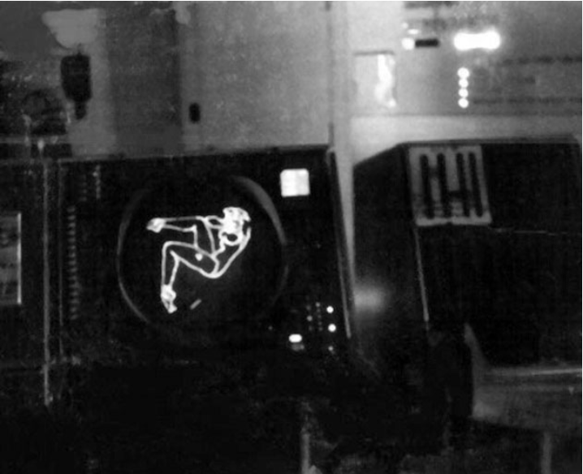
Fig. 1. Primera imagen figurativa digital, recreación de chica Pin-Up a finales de los años 50. (Villagrán, 2016)
Los primeros gráficos: CRT y SAGE
Limitación anterior: Las computadoras entregaban sus resultados solo como texto y números, sin ninguna forma de verlos como imagen.
Cambio: Los monitores CRT permitieron dibujar formas con trazos de luz, y sistemas como SAGE (MIT, 1955) las usaron para mostrar datos de radar en pantalla.
Impacto: Por primera vez la información se podía ver y no solo leer, lo que abrió el camino a la visualización de datos y a las primeras imágenes figurativas hechas con ordenador.
Ejemplo actual: Las pantallas de radar y de control de tráfico aéreo, que siguen mostrando información en tiempo real.
Quien diría que observar a los padres sería una inspiración…
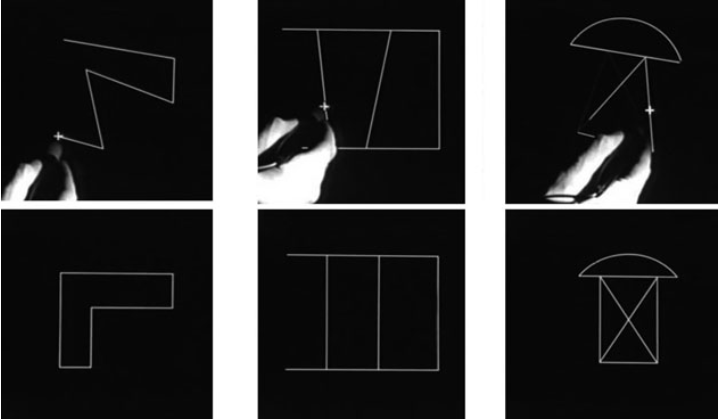
Fig. 2. Fotogramas del video de demostración del Sketchpad que ilustran el uso de las restricciones en el programa. Fila superior: El usuario selecciona partes de un dibujo. Fila inferior: Sketchpad ajusta los dibujos automáticamente. (Villagrán)
Sketchpad y el diseño asistido por ordenador
Limitación anterior: Los usuarios no podían dibujar directamente en el ordenador, solo darle instrucciones.
Cambio: En 1963, Ivan Sutherland creó Sketchpad, que con un lápiz óptico permitía trazar formas lineales directamente sobre la pantalla.
Impacto: Dio inicio a los programas de diseño asistido por ordenador (CAD) y a la idea de interactuar con la computadora de forma gráfica.
Ejemplo actual: Programas CAD como AutoCAD o SolidWorks, y las tabletas gráficas con lápiz digital.
Pensemos en los inicios…los gráficos vectoriales surgieron como un revolución para representar imágenes mediante expresiones matemáticas en lugar de píxeles, pero ¿qué limitaciones tenían?
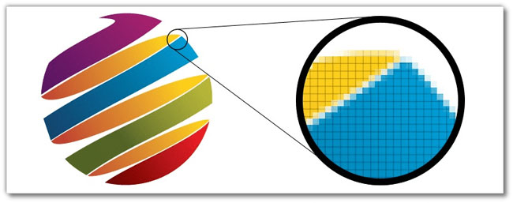
Fig. 3. Los píxeles de una imagen rasterizada son visibles cuando se acerca. (Montana, 2022).
De los gráficos vectoriales al ráster
Limitación anterior: Los gráficos vectoriales, definidos por fórmulas matemáticas, no lograban degradados de color, texturas ni sombreados complejos.
Cambio: Surgieron los gráficos rasterizados, formados por una cuadrícula de píxeles con un color en cada uno.
Impacto: Hicieron posible la fotografía digital y la representación realista, aunque al cambiar su escala pierden nitidez.
Ejemplo actual: Las fotografías digitales en formatos como JPG o PNG; los gráficos vectoriales se siguen usando en logotipos e ilustraciones.
Tal como hemos visto, las máquinas fueron evolucionando, los programas CAD y videojuegos exigían más recursos, aunque se idearon soluciones, como el FPU, con el tiempo seguían sin cumplir con los requisitos, convirtiéndolos en el punto de partida para el nacimiento de las GPU…
Limitación anterior: Los programas CAD y los videojuegos exigían más recursos de los que el procesador y la unidad de punto flotante (FPU) podían ofrecer.
Cambio: En 1999 NVIDIA introdujo el concepto de GPU, un procesador con cientos o miles de núcleos dedicado a la información gráfica.
Impacto: Permitió procesar enormes volúmenes de datos con baja latencia, lo que hizo posibles los juegos en alta resolución y con respuesta casi instantánea.
Ejemplo actual: La NVIDIA GeForce RTX 5090, con 21,760 núcleos CUDA, que ejecuta juegos en 4K a altas tasas de refresco.
Es evidente que nos fuimos muy adelante con la gráfica anterior, regresemos un poco al pasado…
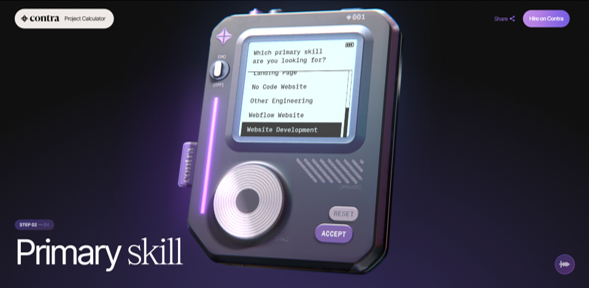
Fig. 5. Sitio web Contra, herramienta web interactiva que sirve para ayudar a las empresas a optimizar sus presupuestos de contratación (Unseen Studio, 2024).
Gráficos en el navegador: Canvas y WebGL
Limitación anterior: HTML solo mostraba texto, enlaces e imágenes estáticas, y para ver algo más se necesitaban plugins que había que instalar, gastaban recursos y tenían fallas de seguridad.
Cambio: Canvas permitió dibujar gráficos 2D con JavaScript, y WebGL llevó la renderización 3D al navegador aprovechando la GPU.
Impacto: Se pueden mostrar juegos, mapas interactivos, realidad virtual y aplicaciones CAD sin instalar nada.
Ejemplo actual: El sitio Contra, creado con WebGL.
1 / 5
Una aplicación real
En la primera parte abordamos lo sorprendentes que pueden ser los sitios web enriquecidos con color, animación y alta resolución. Ahora analizaremos otras aplicaciones que han surgido gracias a la evolución de la graficación por computadora, como es el caso de Google Maps.
Esta herramienta permite trazar rutas optimizadas para usuarios que necesitan desplazarse de manera eficiente. Antes de su aparición, las personas tomaban decisiones basadas únicamente en las zonas que ya conocían, ignorando la distancia exacta a recorrer y, en consecuencia, el tiempo estimado de traslado.
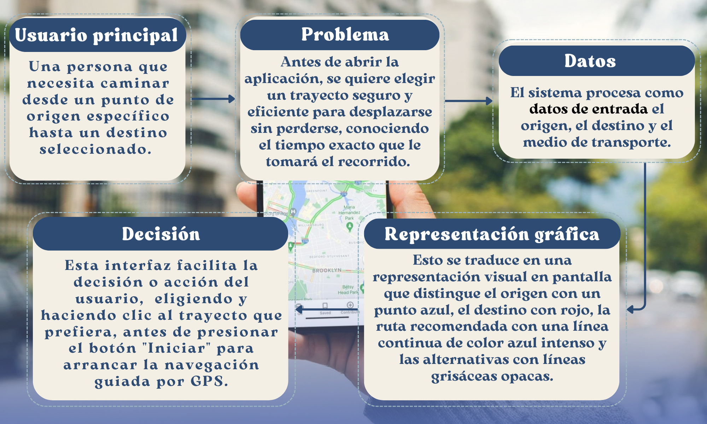
Fig. 6. Ruta que toma Google Maps para generar un trayecto. (Elaboración propia).
Laboratorio de color
Experimento 1: Canales RGB con valores idénticos
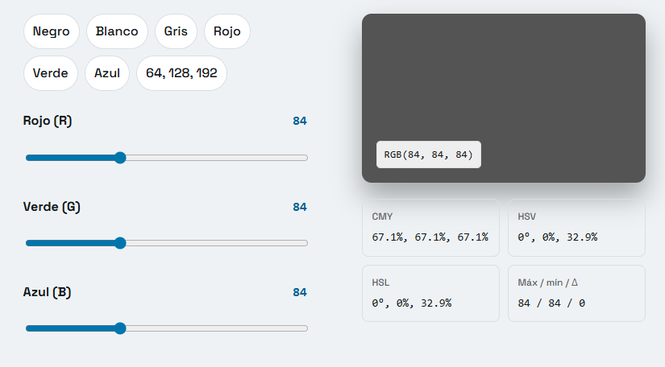
Fig. 7. Color obtenido con RGB en Academia.emcode.
Predicción: Predije que al coincidir los tres canales (Rojo, Verde y Azul), el resultado se comportaría como una mezcla sustractiva de pinturas, generando un tono marrón oscuro o tierra neutro desaturado.
Datos: Se observan en la imagen.
Conclusión basada en valores: Mi predicción fue errónea, porque asumí que los colores se mezclarían como pigmentos. En la síntesis aditiva de una pantalla, cuando los tres canales valen lo mismo, el máximo y el mínimo coinciden y delta es igual a 0, por lo que la saturación cae automáticamente al 0%. Esto me demostró que cualquier combinación de canales con valores idénticos genera un gris puro, cuya claridad depende del valor asignado.
Experimento 2: Desplazamiento hacia valores iguales de Verde y Azul
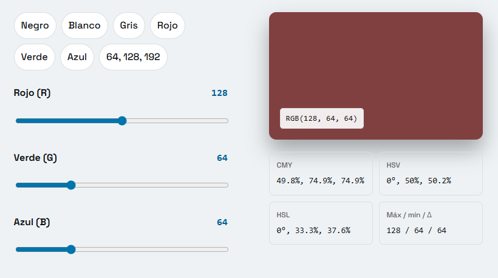
Fig. 8. Color obtenido con RGB en Academia.emcode.
Predicción: Mi predicción fue que, al desplazar los valores desde un rojo oscuro puro hacia una combinación con valores iguales en verde y azul, el color se neutralizaría, obteniendo un rojo más "opaco".
Datos:
RGB: (128, 64, 64)
CMY: (49.8%, 74.9%, 74.9%)
HSV: (0°, 50%, 50.2%)
HSL: (0°, 33.3%, 37.6%)
Máximo: 128
Mínimo: 64
Delta: 64
Conclusión basada en valores: Comprobé que mi predicción fue correcta. Al permanecer el canal rojo como el valor máximo 128, el matiz se mantuvo en H = 0. Sin embargo, al igualar los canales verde y azul a 64, la diferencia entre canales Delta disminuyó a 64, provocando que la Saturación cayera al 50% en HSV (y al 33.3\% en HSL). Con esto confirmé que a menor distancia entre los canales, un valor menor de Delta, el color pierde pureza y se desplaza hacia el centro grisáceo.
Experimento 3: Evaluación de la combinación RGB (64, 128, 192)
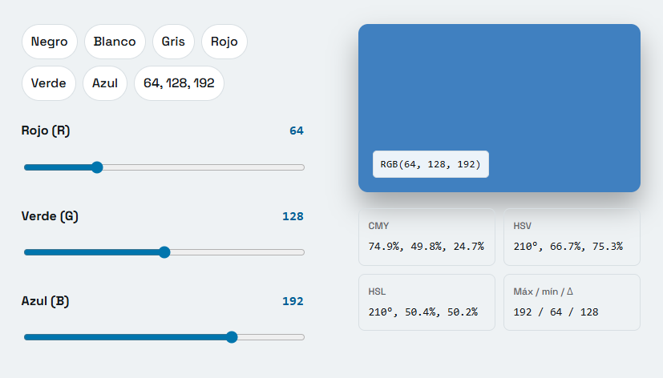
Fig. 9. Color obtenido con RGB en Academia.emcode.
Predicción: Mi intuición me decía que obtendría un color predominantemente azul debido al valor más alto en ese canal (192) con un tono verdoso o aguamarina aportado por el verde (128), mientras que el rojo (64) lo acercaría a un tono ligeramente más cálido.
Datos: Se observan en la imagen.
Conclusión basada en valores: Comprobé que mi intuición fue acertada. Al considerar el valor máximo de (192) en el canal azul y una Delta de 128, observé que el matiz se ubicó en los 210°, dando un tono de azul cian.
Analizar estos datos me ayudó a entender que tanto el modelo HSV como el HSL describen exactamente el mismo color físico en la pantalla, pero lo representan mediante geometrías y conceptos de "brillo" totalmente distintos. Antes pensaba que, de alguna forma HSL y HSV describían exactamente lo mismo, el brillo de una pantalla, por lo que tendrían porcentajes bastantes cercanos, pero al analizar las muestras, pude observar que los conceptos que manejan son diferentes, ya que el Valor y la Luminosidad variaron en mas de 10%.
Puedo decir ahora que comprendo que ambos modelos procesan los extremos de los canales de color de forma distinta, HSV sitúa el color en un punto medio equilibrado, mientras que HSV mide el brillo de forma lineal respecto a la oscuridad absoluta.
De la fórmula al algoritmo
¿Te imaginas calcular los propios valores de HSV? En la siguiente imagen te muestro los pasos y algunos ejemplos para que no te pierdas, mismos que son los colores con los predije algunos datos sin verlos en la pantalla.
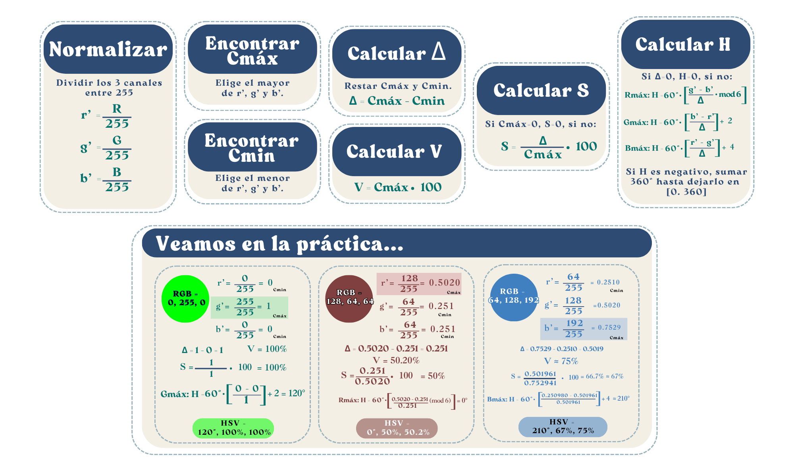
Fig. 10. Fórmulas para convertir de RGG a HSV. Elaboración propia.
Ahora veamos un código para calcularlo...
// Convierte un color RGB (cada canal de 0 a 255) a HSV y devuelve un texto con el formato "H°, S%, V%".
function convertRGBtoHSV(r, g, b) {
//Normalizar: llevar cada canal al rango de 0 a 1
const rPrima = r / 255;
const gPrima = g / 255;
const bPrima = b / 255;
//Obtener el canal con el valor mayor y el de menor valor
const max = Math.max(rPrima, gPrima, bPrima);
const min = Math.min(rPrima, gPrima, bPrima);
//Delta diferencia entre el mayor y el menor (si vale 0, los tres canales son iguales y el color es un gris)
const delta = max - min;
let h = 0;
let s = 0;
let v = max * 100; // V = el canal más alto, expresado en porcentaje
//Saturación(S) es Delta entre el máximo, en porcentaje, solamente si max>0.
if (max !== 0) {
s = (delta / max) * 100;
}
//Tono (H) solo se calcula si hay diferencia entre los canales
if (delta !== 0) {
if (max === rPrima) {
h = 60 * (((gPrima - bPrima) / delta) % 6);
} else if (max === gPrima) {
h = 60 * (((bPrima - rPrima) / delta) + 2);
} else if (max === bPrima) {
h = 60 * (((rPrima - gPrima) / delta) + 4);
}
//Si el ángulo salió negativo, se suman 360 para dejarlo entre 0 y 360
if (h < 0) {
h += 360;
}
//Si el ángulo es 360 se lleva a 0
if (h >= 360) {
h = 0;
}
}
// Devolver el resultado con sus símbolos
return [
Number(h.toFixed(1)),
Number(s.toFixed(1)),
Number(v.toFixed(1))
];
}
Glosario
¿Tienes duda en alguna de estas palabras? Yo también las tuve, veamos qué te puedo explicar de ellas...
GUI(Graphic User Interface / Interfaz Gráfica de Usuario)
Definición: Es lo que nos salvó de tener que usar la computadora escribiendo comandos aburridos en una pantalla negra. Son los botones, ventanas, íconos y menús que puedes clickear.
Ejemplo: La barra de tareas y el botón de inicio, así como el elemento de vídeo introducidos en Windows 95.
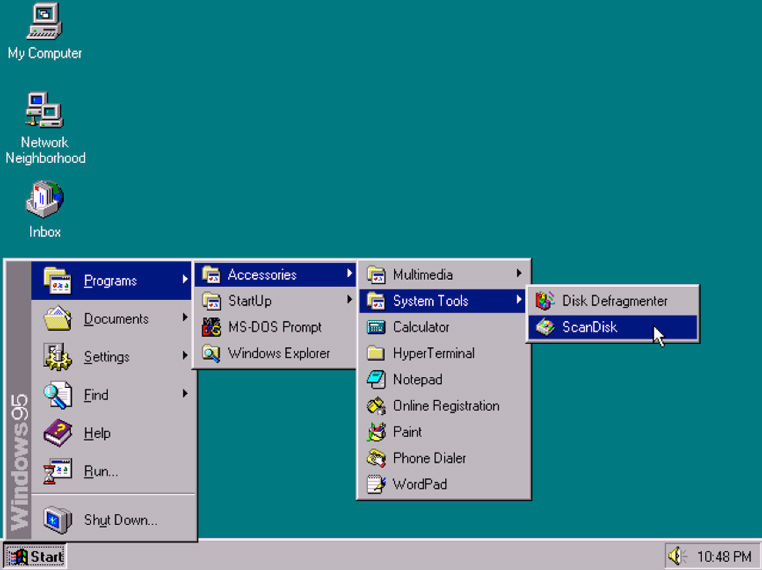
Fig. 11. Escritorio de Windows 95. (Fundació per a la Universitat Oberta de Catalunya, s.f.).
Ordenador Transistorizado
Definición: Las computadoras viejas usaban tubos de vacío gigantes que se calentaban como planchas. Los transistores llegaron para reemplazarlos, haciendo que las computadoras pasaran del tamaño de una casa al de un refrigerador, consumiendo menos energía y siendo mucho más rápidas.
Ejemplo: Una pantalla de los años 60 mostrando vectores ultra simples: líneas verdes parpadeantes sobre un fondo negro formando un radar.
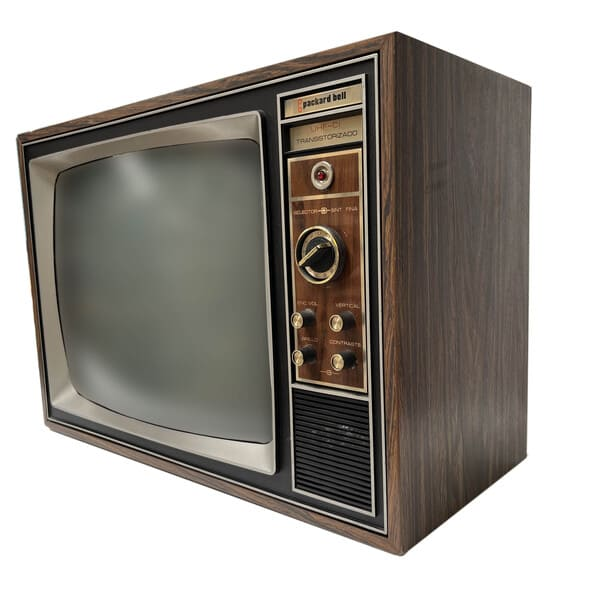
Fig. 12. Pantalla de 1960, funcionaban con la misma tecnología que los monitores para ordenadores. (Sin Autor, s.f.)
CAD (Computer-Aided Design / Diseño Asistido por Computadora)
Definición: El software definitivo para ingenieros y arquitectos. Es el reemplazo digital de la mesa de dibujo, las reglas y los lápices mecánicos para diseñar desde un tornillo hasta un rascacielos.
Ejemplo: Un plano en 3D de una pieza mecánica o una casa, donde puedes ver líneas de eje fijas, cotas con medidas exactas y girar el objeto para verlo desde cualquier perspectiva.
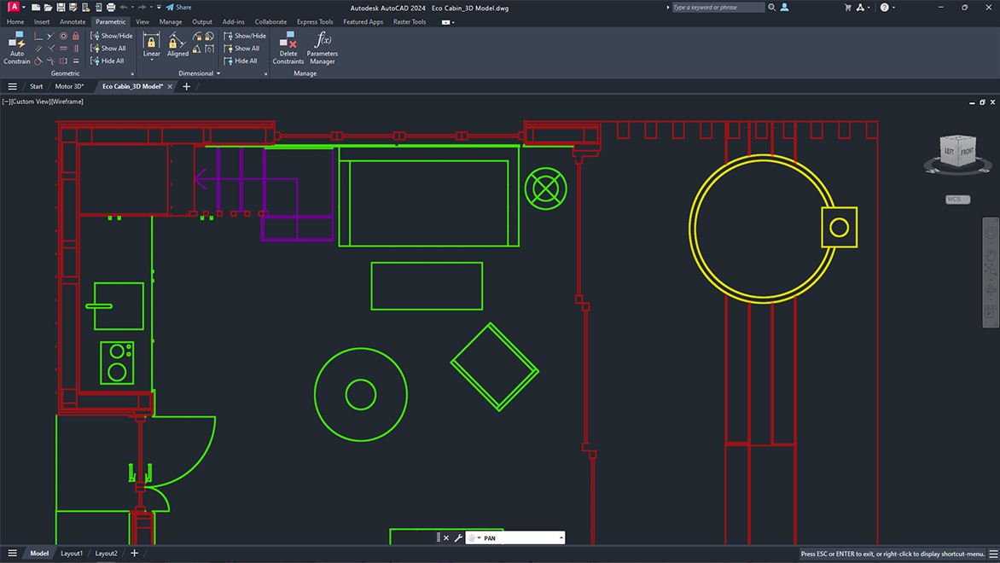
Fig. 13. Plano realizado en AutoCAD de AUTODESK. (AUTODESK, 2025).
Tecnologías rasterizadas
Definición: Es la forma en que nuestra pantalla muestra casi todo hoy en día, usando una rejilla gigante de cuadritos (píxeles). Si haces un zoom extremo a una foto rasterizada, verás que la imagen se "pixelea" porque está hecha de bloques de color fijos.
Ejemplo: Un lienzo digital de 800x600 píxeles donde pintar una línea diagonal se traduce en colorear una escalera de cuadritos negros uno al lado del otro.
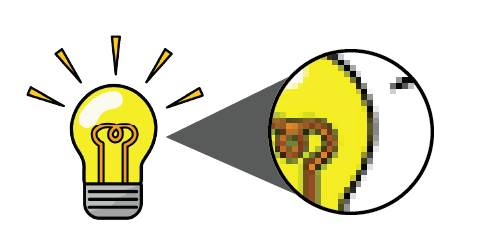
Fig. 14. Bombilla de cerca, observando la tecnología rasterizada (Asako, 2024).
Coprocesador matemático
Definición: Un chip asistente que se usaba antiguamente. El procesador principal (CPU) era bueno para tareas generales, pero malo para matemáticas pesadas (como decimales o trigonometría). Este chip se encargaba exclusivamente de esos cálculos para no ralentizar el sistema.
Ejemplo: Renderizar una figura en 3D mucho más rápido. En lugar de ver cómo la pantalla dibuja línea por línea de un polígono cada 5 segundos, el coprocesador calculaba los puntos flotantes al instante para mostrar la figura completa de golpe.
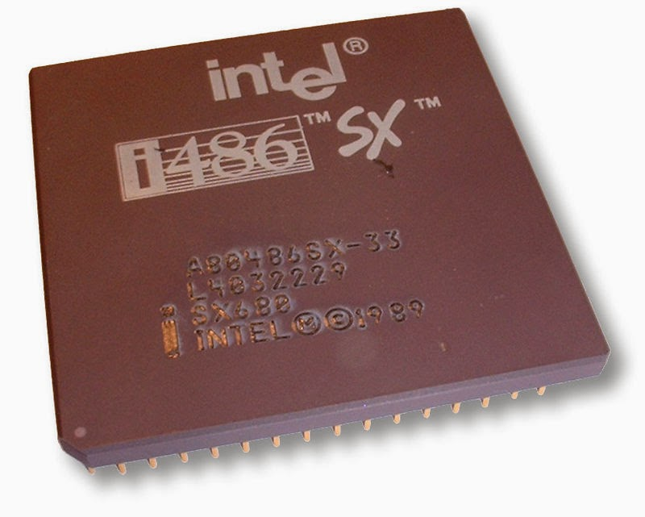
Fig. 15. Procesador Intel i486 SX, arquitectura x86 emblemática en la transición hacia la integración de coprocesadores matemáticos. (Carrasco, 2014).
NÚCLEOS CUDA (Compute Unified Device Architecture)
Definición: Son miles de miniprocesadores que tienen las tarjetas gráficas de NVIDIA. En lugar de tener 4 o 8 núcleos potentes como tu CPU, una GPU tiene miles de núcleos CUDA especializados en hacer tareas matemáticas pequeñas y repetitivas todas al mismo tiempo (en paralelo).
Ejemplo: Calcular la iluminación, las sombras y los reflejos del agua en un videojuego de última generación en tiempo real, procesando millones de píxeles simultáneamente a 60 cuadros por segundo.
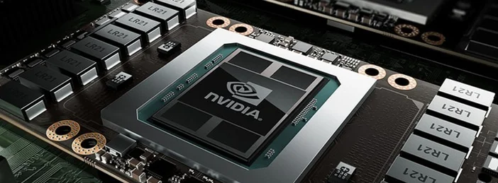
Fig. 16. Procesador gráfico (GPU) de NVIDIA exponiendo el chip de silicio que alberga los miles de núcleos CUDA encargados del procesamiento paralelo masivo. (CORSAIR, 2025).
Definición: Un modelo para entender el color de forma humana. En lugar de mezclar Rojo, Verde y Azul, eliges el color base (Matiz en grados), qué tan vivo está (Saturación) y qué tanta luz tiene (Lightness, donde el 100% de luz siempre te dará blanco puro).
Ejemplo: Un doble cono o cilindro tridimensional de color donde el eje vertical va desde el negro absoluto abajo, pasa por los colores vivos en el centro, y termina en blanco puro arriba.
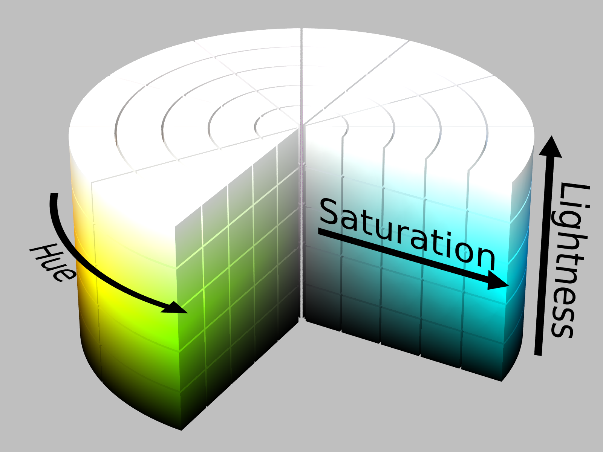
Fig. 17. Representación tridimensional cilíndrica del modelo HSL, ilustrando la distribución espacial del Matiz (Hue), la Saturación (Saturation) y la Luminosidad (Lightness). (Wikipedia, 2026).
HSV (Hue, Saturation, Value / Matiz, Saturación, Valor)
Definición: Muy hermano del HSL, pero con una diferencia clave en el brillo (Valor). Aquí, el 100% de Valor no significa blanco, sino el color en su máxima brillantez. Para llegar al blanco en HSV, tienes que bajar la saturación a 0%.
Ejemplo: Un cono invertido de color. La punta inferior es el negro absoluto, la base superior redonda muestra el círculo cromático con los colores más brillantes posibles, y el centro exacto de esa base superior es el color blanco.
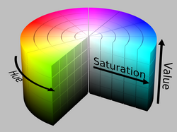
Fig. 18. Representación tridimensional del espacio de color HSV, que organiza geométricamente el Matiz (Hue), la Saturación (Saturation) y el Valor o brillo (Value). (Wikipedia, 2026).
SAGE (Semi-Automatic Ground Environment)
Definición: Un sistema de defensa militar gigante de la Guerra Fría (años 50). Fue uno de los pioneros en computación gráfica: conectaba radares de todo Estados Unidos para detectar aviones enemigos en tiempo real.
Ejemplo: Una pantalla redonda que mostraba mapas del espacio aéreo simplificados con líneas, texto y puntos parpadeantes que indicaban la posición de las aeronaves.
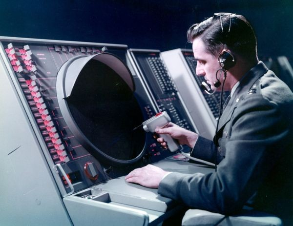
Fig. 19. Operador del sistema militar SAGE interactuando con la pantalla vectorial mediante un lápiz óptico, pionero en la historia de la graficación interactiva. (Computer History Museum, 1959).
CRT (Cathode-Ray Tube / Tubo de Rayos Catódicos)
Definición: La tecnología de las televisiones y monitores antiguos. Usaba un cañón en el fondo que disparaba electrones contra una pantalla de vidrio interna cubierta de fósforo para hacerla brillar y formar la imagen.
Ejemplo: Una imagen con una ligera curvatura en los bordes, un sutil parpadeo (refresh rate) y líneas horizontales de barrido muy finas (scanlines) visibles si te acercabas mucho al monitor.
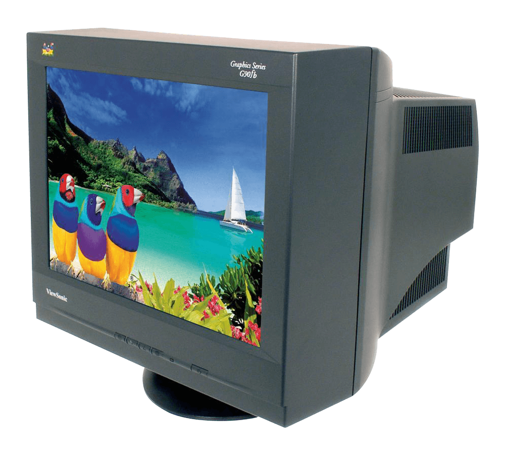
Fig. 20. Monitor CRT ViewSonic de la serie Graphics, ejemplo representativo de la tecnología de tubo de rayos catódicos utilizada en pantallas clásicas. (Pickle, 2022).
HTML (HyperText Markup Language)
Definición: El esqueleto de internet. No es un lenguaje de programación, sino un lenguaje de etiquetas que le dice al navegador web: "aquí va un título, aquí va un párrafo y aquí va una imagen".
Ejemplo: Una página web básica como esta, donde tuve que repasar algunos conceptos básicos de HTML y apoyarme de la poderosísima IA, por lo que no necesitamos imagen de referencia:).
Conclusión
Antes pensaba que la Graficación por computadora consistía solo en mostrar imágenes en una pantalla y que los colores digitales se mezclaban igual que la pintura. La evidencia que reuní en este museo, y a través de esta unidad, cambió mi idea porque descubrí que detrás de cada imagen hay décadas de limitaciones técnicas que se fueron resolviendo una tras otra, y que el color en una pantalla se rige por números y reglas matemáticas muy precisas.
Al recorrer los cinco momentos de la evolución, entendí que cada avance nació de un problema del anterior. Los monitores CRT y el sistema SAGE permitieron ver datos como imágenes, pero eran estáticas y de pocos trazos. El Sketchpad de Ivan Sutherland hizo posible dibujar de forma interactiva y dio origen al diseño asistido por computadora (CAD). Los gráficos vectoriales, nítidos al escalar, no lograban degradados ni texturas, y por eso llegaron los gráficos rasterizados. Las exigencias de los programas CAD y de los videojuegos llevaron a la creación de la GPU con sus miles de núcleos. Finalmente, Canvas y WebGL llevaron los gráficos al navegador sin necesidad de plugins. Todo esto lo pude ver aplicado en una aplicación real, Google Maps, que transforma datos en una representación visual que el usuario puede interpretar para tomar decisiones y quedé sorprendida por las grandes cosas que se pueden logar con tanta evolución..
En el laboratorio de color comprobé que mis intuiciones no siempre eran correctas. Cuando los tres canales RGB tienen el mismo valor, el resultado no es un marrón como yo esperaba, sino un gris, porque Delta vale 0 y la saturación cae al 0%. Con RGB (128, 64, 64) vi cómo un rojo pierde pureza cuando sus canales se acercan. También noté que HSV y HSL no describen el brillo de la misma forma, ya que el Valor y la Luminosidad de mis muestras variaron en más de 10 puntos porcentuales. Esos mismos conceptos (normalización, máximo, mínimo y delta) los llevé a un algoritmo que convierte un color de RGB a HSV, y eso me mostró que la teoría del color puede traducirse directamente en código. En resumen la Graficación por computadora es la unión de hardware, matemáticas y software.
Fuentes y créditos
Academia.emcode. (s. f.). Reconstruye el Núcleo Cromático. https://academia.emcode.tech/materias/graficacion/mission-1?classId=22705f6d-9981-4038-9522-4d629c2a3773. Recuperado el 28 de septiembre de 2026.
Grace Hopper Academy. (2016). WebGL and Canvas Tutorial - How to Use Canvas and WebGL to Draw in a Web Application [Vídeo]. YouTube. https://www.youtube.com/watch?v=Ot_d2DpEskQ. Recuperado el 16 de septiembre de 2026.
Support Google. (2026). Cómo obtener instrucciones sobre cómo llegar a un lugar y mostrar las rutas en Google Maps - Computadora - Ayuda de Google Maps. Ayuda de Google Maps. https://support.google.com/maps/answer/144339?hl=Es-419. Recuperado el 18 de septiembre de 2026.